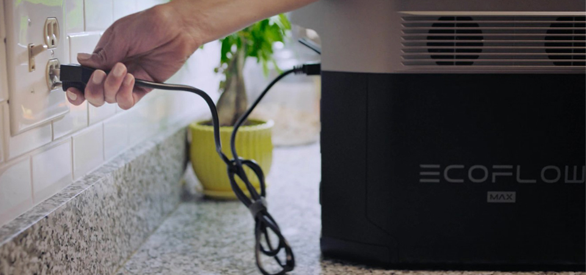
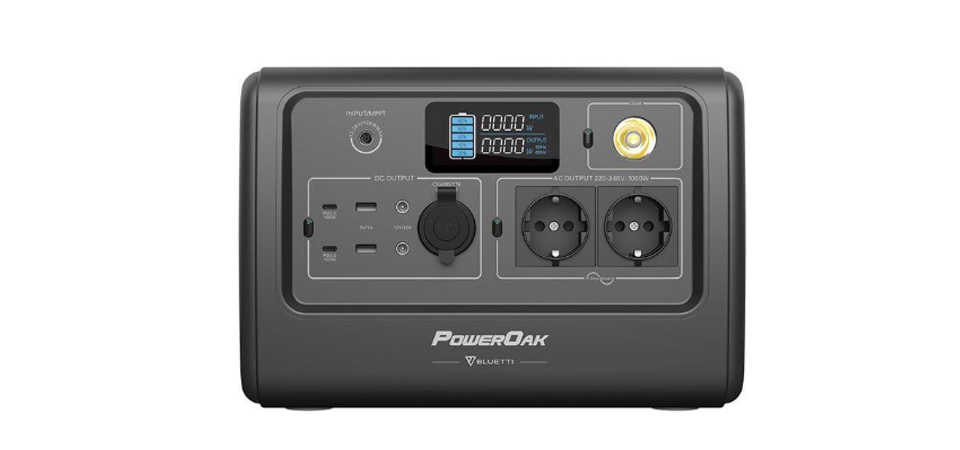
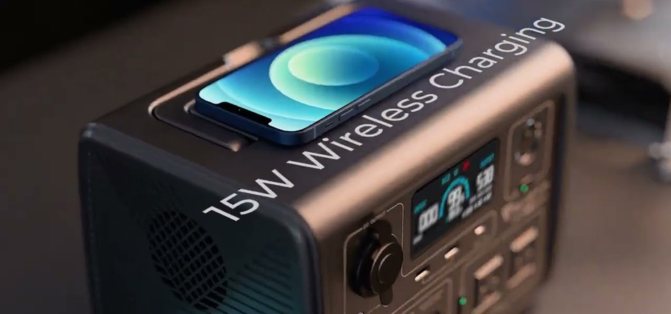
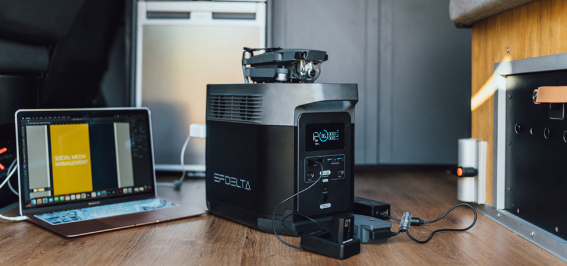

Що таке зарядна станція
Для початку, чим зарядні станції відрізняються від генераторів? Все просто: генератор генерує
електроенергію, а зарядні станції накопичують її в собі, заряджаючись від звичайних розеток, а потім
роздають.
Якщо ще простіше – це банально великі струмовища (павербанки), які працюють аналогічно звичайним
зовнішнім
акумуляторам, тільки ще мають розетки на 220 В. Тому до них за потреби можна під'єднати ноутбук,
мультиварку, телевізор або електричну зубну щітку.
Раніше їх використовували здебільшого для подорожей і додаткового живлення в моменти, коли немає поруч
струму. Зараз вони точно стануть у пригоді у наших оселях.
Отож, на які параметри варто звертати увагу під час вибору моделі?

Що будемо живити
Оцініть, що саме ви хочете живити від зарядної станції, та підрахуйте потужність, яка вам потрібна.
Наприклад, під час відсутності світла ви хочете без проблем робити собі зранку каву в кавомашині,
прибирати
з пилососом і дивитися телевізор.
Рахуємо споживання: кавомашині для роботи потрібно 1200-1500 Вт, пилососу близько 1000 Вт, а телевізору
100-200 Вт. Отже, вам потрібен пристрій з потужністю не менш як 1500 Вт, а в ідеалі 2500 Вт.

Вибираємо ємність моделі
Ми вже звикли, що у power bank показники потужності зазначаються в мАг. В зарядних станціях потужність в
основному вказується в Вт•год. Звісно, під час вибору також важливо враховувати напругу та силу струму.
В цілому закономірність проста: чим більше у моделі показник Вт•год, тим довше пристрій працюватиме під
навантаженням.
Для прикладу візьмемо вже знайому зарядну станцію Bluetti EB70. У моделі ємність 716 Вт•год при 32 А,
потужність 1000 Вт. iPhone 13 Pro Max зі своєю батарейкою на 4352 мАг при 3.85 В (це 16.75 Вт•год)
зарядиться із нею близько 42 раз. Ніби то гарні цифри.
Але тут ми рахуємо передачу електроенергії, а є техніка, яка потребує постійного живлення. А тепер
порахуймо
скільки працюватиме телевізор Samsung UE43AU7100, який споживає 130 Вт•год. Беремо 716 Вт•год зарядної
станції, ділимо на 130 Вт•год, які споживає телевізор, і отримуємо близько 6 годин роботи. Непогано!
Але якщо у вас техніка, якій постійно потрібно 1000 Вт, то не дуже потужної зарядної станції вам навіть
на
годину роботи не вистачить.
У висновку: моделі з потужністю до 1000 Вт краще брати для зарядки мобільних телефонів, ноутбуків,
можливо
роутерів/старлінків, колонок та інших портативних гаджетів. Запускати за допомогою таких зарядних станцій
домашню техніку буде важко.
А якщо потрібно підживити кафе, невеликий будинок чи квартиру, вибирайте моделі потужністю від 5 кВт, які
витримують стрибки напруги до 10 кВт і з ємністю до 18432 Вт•год.

Вибираємо швидкість зарядки
Навіть досить компактні power bank можуть довго заряджатися, хоча вони здебільшого використовуються
тільки
для смартфонів. У зарядних станцій час заряджання може бути дуже різний, як і сама можливість зарядки:
від
звичайної розетки AC 230В та автомобільного прикурювача, від сонячної панелі та додаткової батареї, від
USB
Type-C та DC.
Наприклад, Bluetti PowerOak EB70 заряджається від мережі лише за 4,5 години чи 8 від автомобільного
прикурювача. А EcoFlow Delta 2 на 1800 Вт і 1024 Вт г ємності буде готова до використання вже за 80
хвилин.
Час заряджання безпосередньо залежить від того, які блоки живлення в комплекті у моделі, та як швидко
вони
працюють.
Вибираємо кількість портів
Всі станції живлення мають як мінімум одну розетку і двійко виходів USB. Саме наявністю розетки вони й
відрізняються від зовнішніх акумуляторів.
Оскільки більшість техніки вже має живлення від USB, зважайте на наявність швидких USB-C, бажано, щоб їх
було декілька.
Можливо знадобиться бездротова зарядка, якщо ваші пристрої її підтримують.
Тим, хто проводить багато часу в авто, стане у пригоді можливість зарядки від прикурювача.
Не ігноруйте наявність інтегрованого ліхтарика, в наші часи – це дуже корисна можливість.
На скільки циклів вистачить
В залежності від типу акумуляторів, які використовуються всередині зарядної станції, можна зрозуміти
термін
її служби.
Звертайте увагу на цей параметр і беріть такі моделі, які мають 2000+ циклів.
Важливий і тип батарей: літій-залізо-фосфатний акумулятор LiFePO4 краще за звичайний літій-іонний Li-Ion
за
терміном служби, екологічністю, морозостійкістю тощо.

Модулі розширення
Якщо вже купуєте зарядну станцію, вибирайте таку, у якої є можливість збільшити автономність – це зручно
та
економно.
Наприклад, ви вирішили просто спробувати, як працює зарядна станція, і взяли модель із простою
комплектацію.
Якщо вас все влаштувало, замість того, щоб купувати ще одну станцію, можна придбати модулі батарей, і
таким
чином збільшувати автономність наявної моделі. Додаткові батареї здебільшого є в асортименті великих
брендів, таких як Bluetti та EcoFlow.
Станції яких брендів краще вибрати?
EcoFlow та Bluetti. Це серйозні компанії, і вони роблять чудові станції, які допоможуть підзарядити все,
що
потрібно.
Корисні поради
Якщо ви вирішили купити зарядну станцію типу Bluetti EB3A на 600 Вт і 268 Вт•год виключно для зарядки
ноутбуків, смартфонів та інших гаджетів, які можуть заряджатися по USB.
Так, потужність таких power bank не 600 Вт, а 87 Вт, але ємність 26000 мАг, що дорівнює близько 100
Вт•год.
Тобто три такі павербанки дадуть вам 300 Вт•год і три виділені лінії по 87 Вт.
А ще така покупка коштуватиме 450$, а не 730$, як зарядна станція, займатиме менше місця і носити з собою
за
потреби акумулятори буде простіше.
Звісно, якщо у вашого ноутбука немає можливості заряджатися за допомогою USB, чи живити потрібно
потужніші
пристрої, тут вже неможливо обійтись навіть дуже місткими зовнішніми акумуляторами. Орієнтовно від
потужності 1000 Вт і ємності 700+ Вт•год доведеться використовувати тільки зарядні станції.